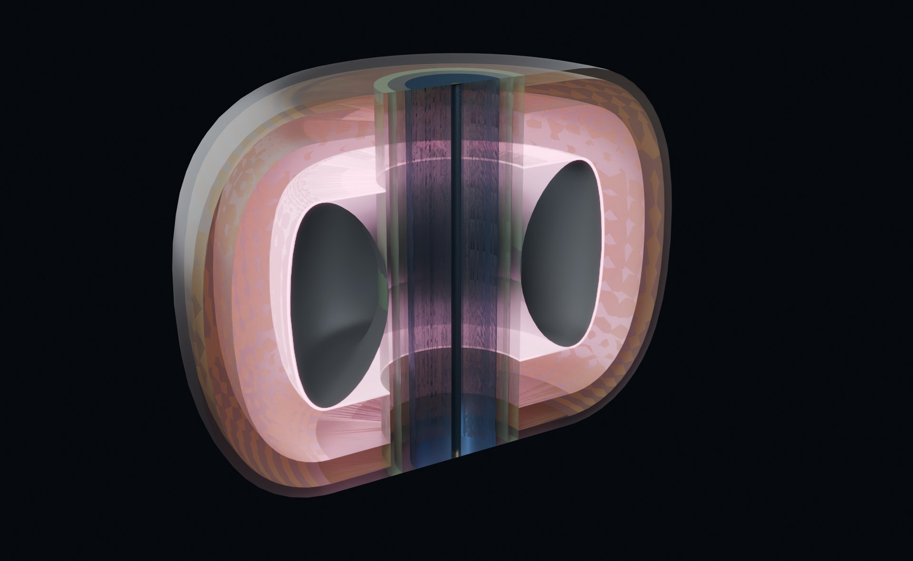

Kronos did not take fusion on faith or on a single institution's word. Over ten months we re-derived our design from first principles — every binding gate, on the established scientific codes the field uses, on our own compute — and we publish the result so anyone can re-run it. This is how the modeling actually works.
From October 2025 to August 2026 we independently re-ran the 164 binding physics gates of the design on roughly 69 established scientific codes — no black boxes, no proprietary physics engine. 141 of those gates have their own interactive validator page, each recomputing on demand. The result: all three machines — the Hyperion breeder, and the Aegis and MetroVolt burners — close on the frozen physics.
This distinction is load-bearing, so we state it plainly:
The physics results come from established, community-benchmarked codes — gyrokinetics, neutronics, orbit-following, MHD, materials. The AI/ML and quantum layer sits alongside as methods — surrogates, control, prediction, acceleration — never as the source of the physics. A headline number is what CGYRO or OpenMC computed, not what a model guessed. Machine learning speeds the search and runs the control; it does not stand in for the calculation.
The same tools used across the fusion program, run on our own hardware for this design. Each settled a specific binding question.
| Code | Physics domain | What it settled | Gate |
|---|---|---|---|
| CGYRO | Nonlinear gyrokinetic turbulence | Core turbulent transport; the negative-triangularity confinement benefit | closed |
| ASCOT5 | Fast-ion / alpha orbit following | Alpha confinement and first-wall loss vs field ripple | closed |
| FreeGS | Free-boundary equilibrium | Solenoid-free equilibrium and plasma shaping (δ = −0.30) | closed |
| OpenMC | Monte-Carlo neutronics + depletion | Tritium breeding ratio, first-wall loading, activation inventory | closed |
| NIMROD | Extended-MHD | Macroscopic stability of the equilibrium | closed |
| CQL3D · GENRAY | RF current drive (Fokker-Planck + ray tracing) | Non-inductive current and bootstrap support | closed |
| TMAP8 | Tritium transport | Tritium inventory and permeation through the fuel cycle | closed |
| ALARA · TALYS · NJOY | Activation & nuclear data | Waste classification and processed cross-sections | closed |
| Xolotl · RustBCA | Plasma–materials interaction | First-wall erosion, gas retention, defect evolution | closed |
| Quantum-ESPRESSO + ML potentials | Materials (DFT + ML-accelerated) | Low-activation refractory alloy screening | closed |
| Mirror micro-stability (DCLC) | Kinetic stability, burner | Loss-cone / DCLC stabilization for the tandem mirror | closed |
Empirical confinement scaling laws are fit to the machines that already exist — mostly conventional-aspect, positive-triangularity tokamaks. They do not transfer cleanly to a strongly-shaped, low-aspect spherical tokamak. So we don't lean on them. We anchor in gyrokinetics, which is dimensionless by construction — the physics depends on ρ*, ν*, β and the normalized gradients a/LT, a/Ln, not on any one machine's size.
The headline CGYRO result. On config-22021 the negative-triangularity plasma shows ~40% turbulence suppression at the ion scale (real deuterium mass, μ = 3672) and ~80% at the electron scale (μ = 400, the standard ETG method). The suppression is robust — it holds across collisionality ν* and across the spectrum kyρs = 0.1–6.0 — and it reproduces on independent, representative DIII-D-NT and TCV-like shape pairs, not just our own geometry. The result rests on the method and the ensemble, not on any single run.
Alongside the physics codes — never in place of them — sits a methods stack that makes the campaign fast, controllable and forward-looking:
All of it is documented in Companion Paper 1.5 — AI/ML & Quantum Control.
Every headline number regenerates from a named script and archived data under a fixed seed, and traces to a gate you can open. The record is public:
The honest gates. The Hyperion breeder is a platform — its success is measured in tritium and isotopes, and it makes no net-electricity claim. The Aegis / MetroVolt burner closes on-model at engineering gain Q_E 1.318 (neutron fraction f_n 5.44%, P(Q_E>1) = 1.0); its plug requirement is demonstrated by a named WHAM-scale experiment, not assumed. Breeder headline: Q 3.076 at 85.04 MW, 9.66 MA (solenoid-free), δ −0.30, α-confinement 99.98%, TBR up to 1.42. Conceptual engineering program — not an operating machine.